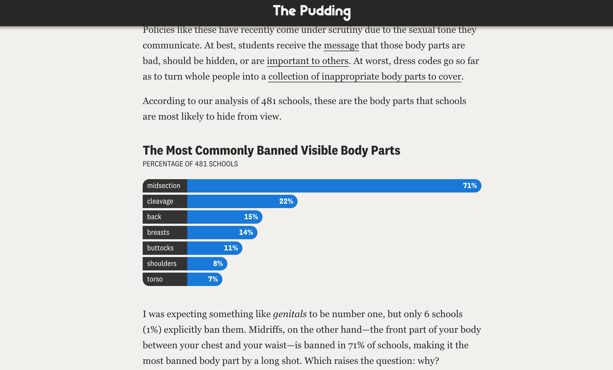
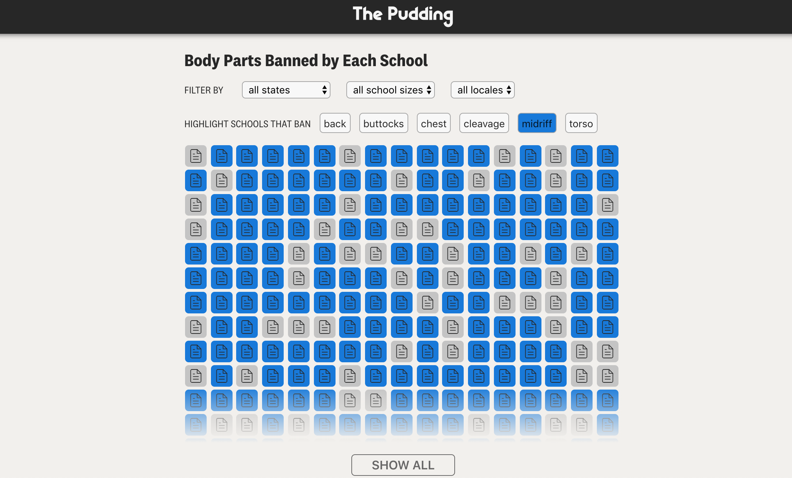
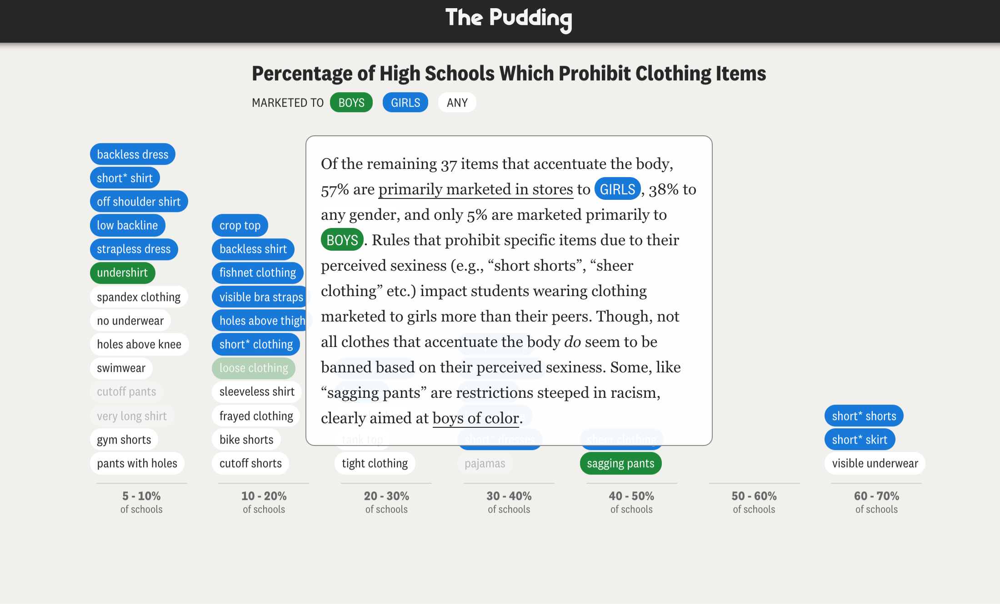
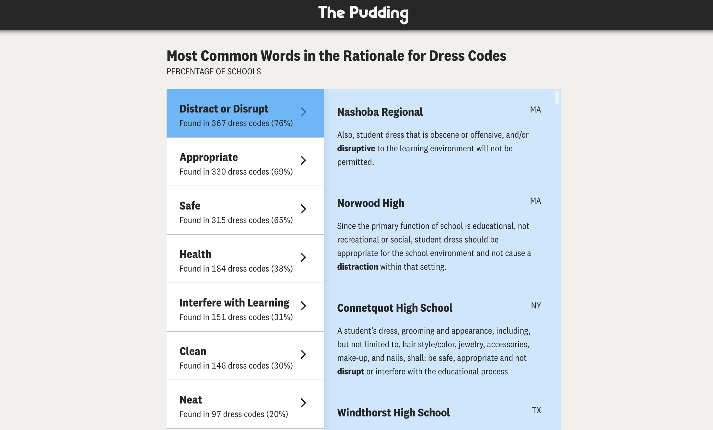
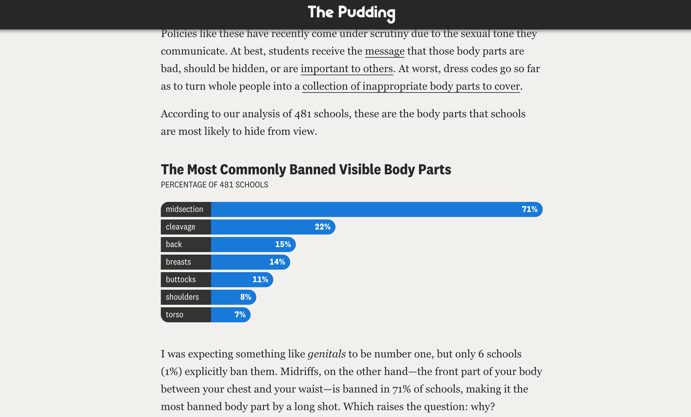
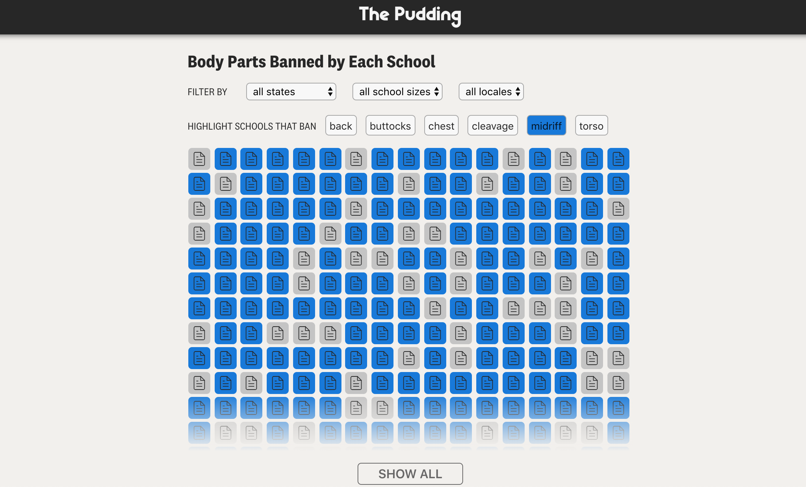
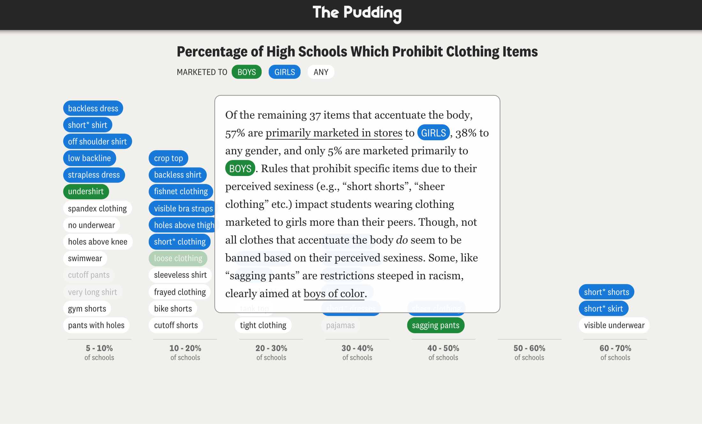
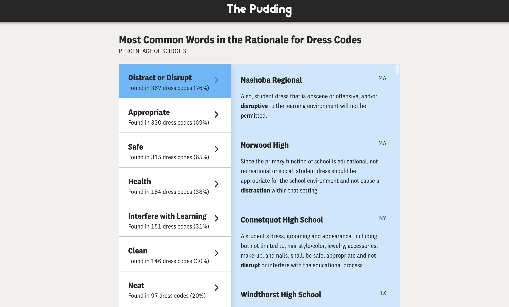

Screenshots


If you aren’t currently in high school, it’s probably been a while since you’ve read a student handbook. The dress code section, present in about 55% of US public high schools, contains a set of hotly debated policies. They are most commonly accused of being racist, sexist, reinforcing gender stereotypes, and promoting sexualization. This is the first piece in a forthcoming series where we examine how public high schools police bodies differently and attempt to add data to each of these conversations. Here, we’ll focus on the last issue: how dress codes sexualize students by analyzing the rules and their framing in 481 public high schools across the US.
This project has been no small undertaking and it would not have been possible without the help of so many people. Thank you to my editor, Matt Daniels, for providing feedback on all (what feels like) 8493084 versions of this story. To Parker Young for helping me iterate through every angle for months, and to both Parker and Jan Diehm for the invaluable design assistance. To the many outside reviewers that read through drafts of this story and provided vital feedback. To the data assistants, Kait Thomas and Anna Houston, that helped unbury me from a pile of virtual student handbooks. And to the entire Pudding team who kept me going. 💖
